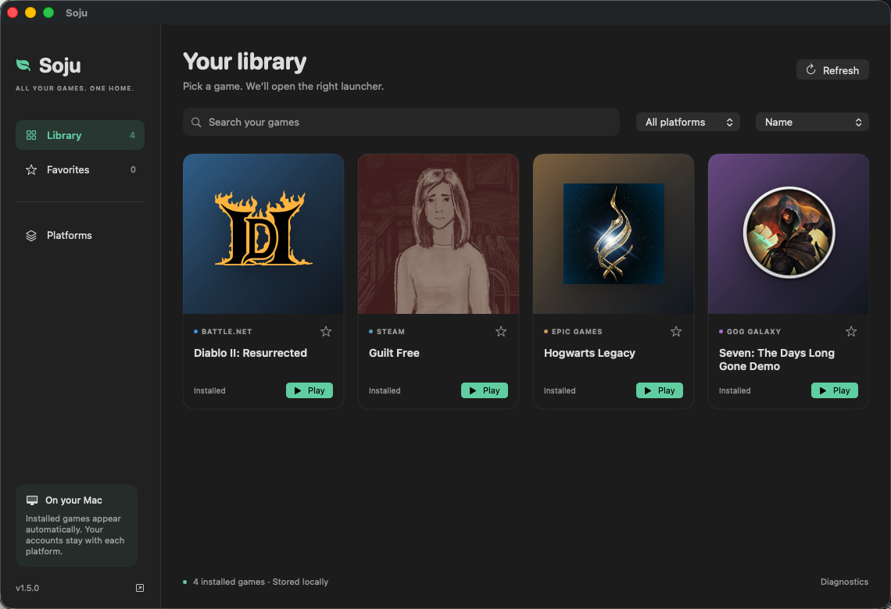
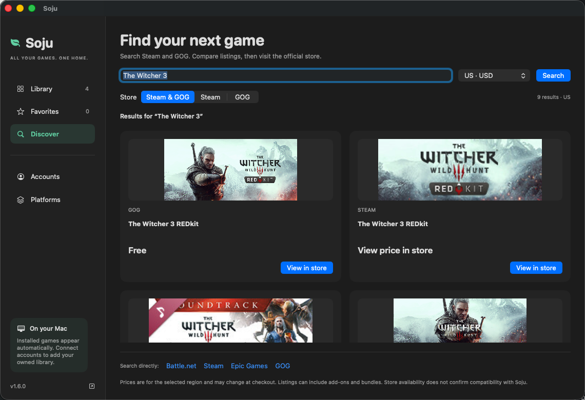

Battle.net
Sign in, manage downloads and launch supported Blizzard games.
soju battlenetFREE & OPEN SOURCE · APPLE SILICON
A free, open-source game library for Apple Silicon. Find installed games from Battle.net, Steam, Epic and GOG in one native Mac app. Connect Steam or GOG owned libraries, find your next game and play through the official launchers.
Set up and manage your platforms in Soju. Accounts, purchases and game updates stay with each store. Compatibility depends on the game and your Mac.
Local detection, platform filters, favorites and game-specific diagnostics. Sign in to Steam to import your owned library, or read the owned games cached by GOG GALAXY. No API key required. No new Soju account. No library uploads.

Search Steam and GOG listings with prices for your selected region. See which listings are already in your library, then visit the store to buy. Eligible purchases through links marked “Supports Soju” may support the project at no extra cost. How game purchases support Soju.

Store results may include add-ons and bundles. Final prices and compatibility should be checked before purchase. Epic and Battle.net account imports are not available yet. Account setup and privacy.
A 30-second gameplay demo: Hogwarts Legacy through Epic and Guilt Free through Steam, recorded on M4 Pro / macOS 26.5.
Epic footage uses D3DMetal. Steam footage uses the additional custom DXMT setup. This is a short gameplay sample, not a performance benchmark or a guarantee for other games. Download the gameplay video.
A 21-second preview with real Epic Games Launcher and Battle.net footage, recorded through Soju on Apple Silicon.
This video shows launcher interfaces. Game compatibility is documented below. Download the video.
Sign in, manage downloads and launch supported Blizzard games.
soju battlenetRun the Windows client in its own Wine environment. Verified D3D11 components are installed automatically.
soju steamSign in, install games and return to the launcher from its tray.
soju epicAccess your account and library. Game compatibility is still being explored.
soju gogSoju combines installed games in one library. Each official launcher retains its own login, purchases, downloads and game updates.
The native desktop preview combines installed and imported owned games, searches stores and manages all four launchers. Apple Silicon · app UI: macOS 14+ · Steam component build: macOS 26+. Setup and signing notes.
Prefer the terminal? Select launchers before any downloads. Steam-only installs skip the CX engine and Apple GPTK.
curl -fsSL https://soju.snack-wrap.com/install.sh | bashOr install the CLI through Homebrew:
brew install BCD1210/soju/soju
soju installUse soju doctor to check your setup and soju update
to update it. Homebrew-managed scripts update through brew upgrade soju.
Before you begin: Apple Silicon, Rosetta 2, Xcode Command Line Tools and Homebrew. The Battle.net, Epic and GOG setup uses Apple's Game Porting Toolkit, downloaded separately with an Apple ID. The tools are free; games and store accounts are your own.
These examples show what the toolkit can do. Compatibility depends on the game, store and system; launcher support does not mean every game will run.
| Example | Store | Evidence and conditions |
|---|---|---|
| Hogwarts Legacy | Epic | Installed and played in-game using D3DMetal. Tested on M4 Pro / macOS 26.5. |
| Diablo II: Resurrected | Battle.net | In-game and online on M4 Pro / macOS 26.5. Requires macOS 26.4 or later. External user confirmation also documents an Update/Play workaround. |
| Guilt Free (Unity / D3D11) | Steam | In-game dialogue and input recorded on M4 Pro / macOS 26.5 with a custom DXMT setup. Additional build artifacts required. Watch the gameplay demo. |
| GOG GALAXY library | GOG | Login and library verified; games have not been broadly tested. |
Steam-edition D2R remains unverified. Games requiring unsupported kernel anti-cheat are outside the supported scope. Check the compatibility notes before installing a game.
Working games, partial successes and failures all help. The form asks for your game, store, Mac, macOS and setup. GitHub sign-in required; reports are public.
Choose launchers, check your installation and update Soju.
Client setup, the DXMT game-rendering path and its requirements.
A worked example for Battle.net, including launch troubleshooting.
Battle.net 설치와 게임 실행 문제를 다루는 한국어 가이드.
Where Soju fits alongside other Wine-based tools.
네 가지 런처의 설치 방법과 현재 지원 범위.
Soju's scripts and documentation are open source. Its Wine engine is built from CodeWeavers' published sources. Battle.net, Epic and GOG share that engine; Steam uses a separate private Wine 11 setup with DXMT for supported D3D11 games.
Apple's proprietary D3DMetal/GPTK components are a separate download, and the store clients remain their publishers' software. Soju does not bundle them.
The diagnosis notes and Steam implementation notes explain the fixes so others can inspect and reuse the work.